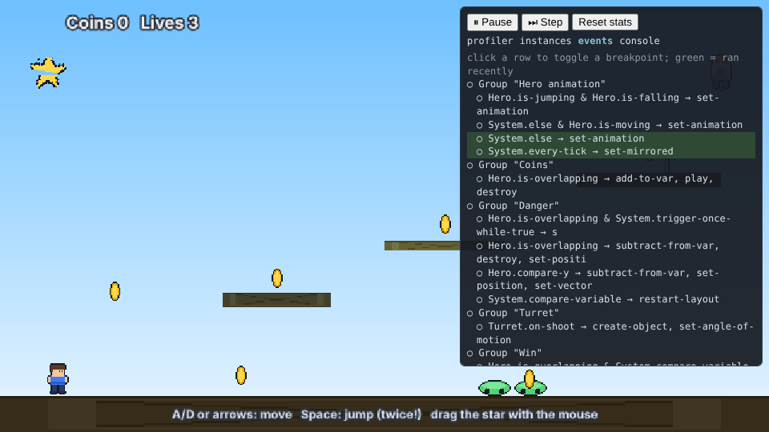

Manual / Nord Engine
Debugger and profiler
The debugger lets you pause a running game, step one frame at a time, inspect every object and see which logic is slow.
Add ?debug to the game's address (or set "debug": true in nord.project.json) and press F9. It costs nothing when it is off.

- Pause / Step / Resume — Step runs exactly one frame.
- Breakpoints — click an event in the events tab. The game pauses at the end of the frame in which that event ran.
- instances — every live object with its position and instance variables; click a variable to change it while the game is paused or running.
- console — type any event-sheet expression (
coins + lives,Hero.X,Inventory.Count) and press Enter. - profiler — frame time graph (red bars are slow frames), average/worst frame, object count, draw calls (when the renderer reports them), JS heap (Chrome) and the cost of each top-level event or group so you can see which logic is slow. Reset stats starts a new measurement.
Deep profiling#
The details tab (and the editor's Window ▸ Profiler) goes further than the graph:
- Phases: average milliseconds per frame for
fixed+physics,systems,scripts,components,behaviors,late,cleanup. - Scripts: total time and call count per script method (
Player.update). Components: per component type. - Slow-frame spikes: every frame over 25 ms with the most expensive script of that frame.
- network: ping, bytes per second, dropped messages, simulated lag (see Multiplayer).
- ● Record keeps up to a minute of frames; Save profile writes
profiles/profile-N.jsonin the editor (a download in the browser overlay). Format and limits:docs/PROFILER.md. Guided practice: T52.
From code: const d = game.enableDebug(); d.pause(); d.step(); d.toggleBreakpoint('2.0'); d.evaluate('score * 2'); d.stats();. Events are identified by their position in the sheet (2.0 = the first sub-event of the third entry).